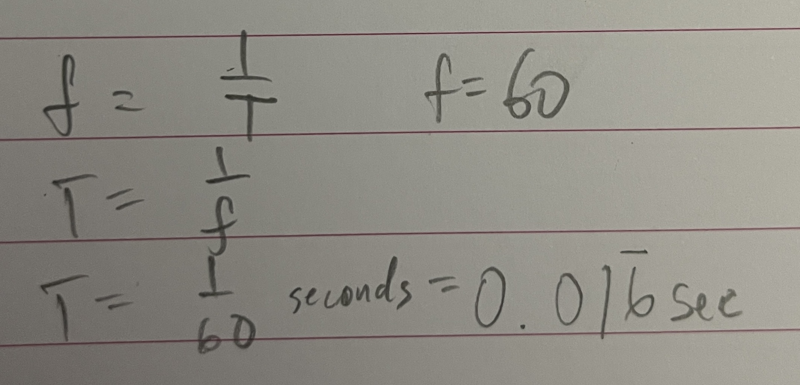

Here is a video of my basic arduino circuit. Its function, which can be seen, is for it to have each LED blink in succession.
This is my written out schematic. As shown by my work, I ended up using 220 ohm resistors because I did not have 160 ohm resistors.
void setup() {
//Set up for loop to initialize pins
for(int i=10; i <= 12; i++){
//i corresponds to pin #, output is so the pin voltage is set to 5V or 0V
pinMode(i, OUTPUT);
}
}
void loop() {
//introduce int "time" so that if someone wanted to change the delay,
//they would only have to change one number instead of two.
int time = 1000;
//introduce for loop, i represents each pin #. It will cycle through each pin: 10-12.
for(int i=10; i <= 12; i++){
//sets pin i's voltage to HIGH (5V)
digitalWrite(i, HIGH);
//delays for "time" ms to keep light on for a moment
delay(time);
//sets pin i's voltage to LOW (OV), turning it off.
digitalWrite(i, LOW);
//delays for "time" ms to keep light off for a moment
delay(time);
}
}
The code is pretty simple. I opted to use loops because I thought it would be more readable than copy-pasting similar lines of code.
This is a still image of my final circuit! As shown in the video at the top of the page, the lights link from left to right.
This is the graph of Volts over time (seconds) for the circuit that I made.
If we assume that people can see an absolute maximum of 60 frames per second, we can calculate the frequency of
which we would need to blink the light where the blinking would become imperceptible:
The calculation shows that we need to have the LED blink every 0.01667 seconds.